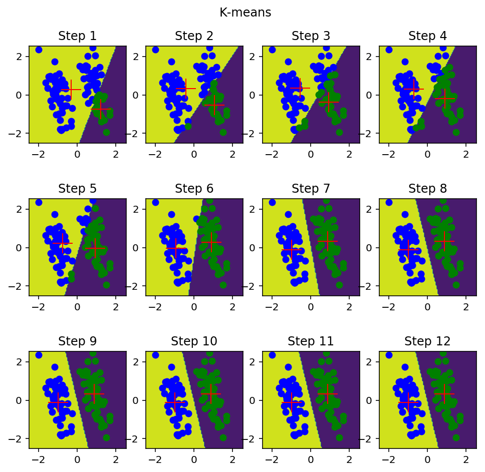
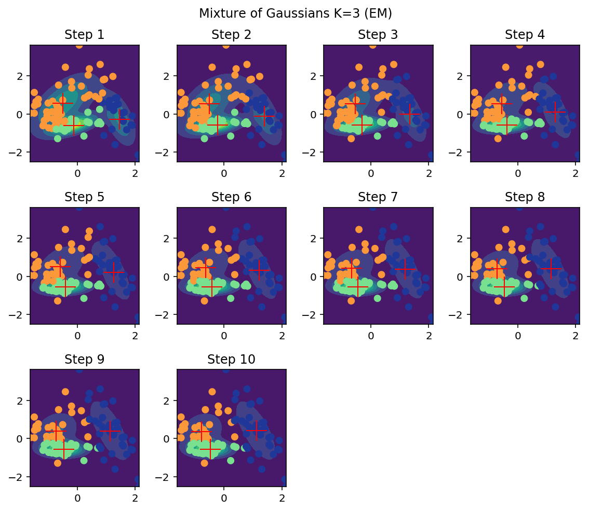
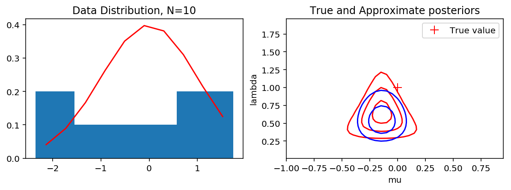
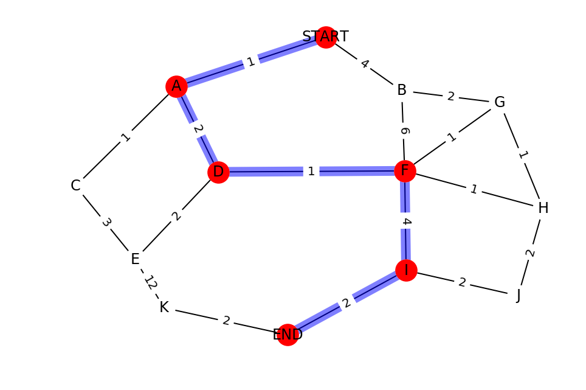
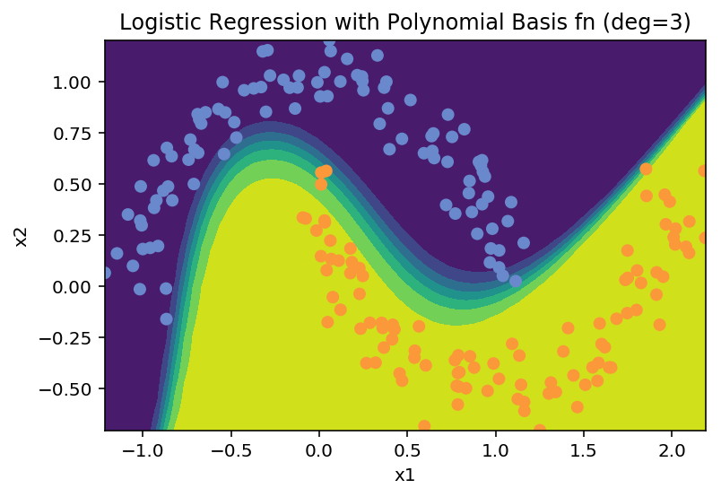
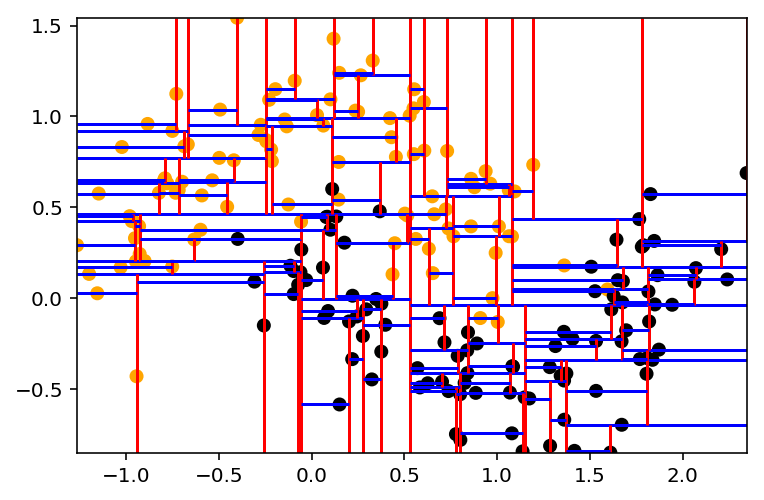

| 2017 | Summer Intern at benevolentAI |
|
|
| 2016-2017 | MSc Machine Learning at University College London |
|
|
| 2012-2016 | MSci Physics and Research Placement at Imperial College London |
|
|
| 2010-2012 | International Baccalaureate at Kent College |
|
| Topic | Details | Figures |
|---|---|---|
| Mixture Models |   | |
| Approximate Inference |  | |
| Network Algorithms |  | |
| Classic ML Algorithms |   |